library(tidycensus)
library(tidyverse)
library(ggspatial)
library(sf)
library(units)
library(crsuggest)
library(gt)
library(gtExtras)
library(ggtext)
library(glue)
library(patchwork)
library(janitor)
library(nngeo)
library(zeallot)
options(tigris_use_cache = TRUE)1 Introduction
I am interested in the differences in economic conditions across different parts of Albuquerque. More specifically, I want to see how they vary between city council districts. Before doing so, I want to get a sense of the basic demographics of the city, both how they compare the the state and country, and how the districts compare demographically. To do so, I will access data from census.gov using the tidycensus package. I will need to get the district lines from a local government website and, since census tracts do not line up with council districts, the census data will need to be apportioned between the council districts.
A large portion of this article is concerned with programming in R. For those uninterested in coding, and would just like to see the data, you are invited to go straight to Section 3. Data analysis inevitably involves repeating the same thing with minor changes or updates over and over. To do so efficiently while minimizing errors, custom functions are required. When incorporating tidyverse functions into these, some special syntax is needed. I’ll also show how to leverage purrr’s map family of functions to streamline code, and how to apply the %<-% operator from the zeallot package to produce powerful, clear and concise expressions.
2 Preparing the data
I will use the following libraries, as well as a palette from RColorBrewer:
And set the following constants, the first two of which are essentially parameters for the analysis.
crs <- 6528
year <- 2023
source <- str_glue("Source: census.gov, acs5, {year}")2.1 City Council Districts
First I will obtain the boundaries for the city council districts. The Albuquerque website provides a wealth of data, although it is not necessarily well-structured. In many of the data sets, the relevant data is contained in columns of html, from which the tables need to be extracted. I’ll get to that when I incorporate crime statistics later. This case is even worse, as the website’s council district table only provides councilors’ names as a variable, not district numbers. And the names provided are for councilors from several years ago!
Dealing with local government data portals is hit and miss. Fortunately, the Bernalillo County website provides what I need, as well as providing the shape for the Village of Los Ranchos de Albuquerque. Los Ranchos is sort of the Beverly Hills of Albuquerque, in the sense that it is a separate municipal enclave (almost) entirely surrounded by Albuquerque, and where many of the larger properties and houses in the area are located. I’ll want to include it on maps.
The data portal for Bernalillo County is not very friendly for programmatic downloading, though. My first effort to download and unzip the file containing the city council boundaries failed to produce a usable file. Adding the argument method = "curl" allowed me to download the files, however.
download.file(
"https://www.berncoclerk.gov/wp-content/uploads/2025/07/BERNCO_CLERKJuly2025.gdb_.zip",
destfile = "data/bernalillo.zip", method = "curl"
)
unzip("data/bernalillo.zip", overwrite = T)I will read the file with sf::st_read, which will result in an sf object. The only variable I’m interested in is the district number, so I’ll just grab that, fix the variable name, and make the content more descriptive for plots and maps.
council_dists <-
st_read("data/BC_CityCouncil/ABQ_CityCouncils.shp") %>%
select(district = DISTRICTNU) %>%
mutate(district = paste("District", district))Reading layer `ABQ_CityCouncils' from data source
`/home/biscotty/Projects/BWQuarto/biscottys-workshop/posts/data-science/r-census/abq-demographics/data/BC_CityCouncil/ABQ_CityCouncils.shp'
using driver `ESRI Shapefile'
Simple feature collection with 9 features and 11 fields
Geometry type: POLYGON
Dimension: XY
Bounding box: xmin: 1454193 ymin: 1436226 xmax: 1574255 ymax: 1534960
Projected CRS: NAD83(HARN) / New Mexico Central (ftUS)I’ll do the same for Los Ranchos.
Show the code
download.file(
"https://www.berncoclerk.gov/wp-content/uploads/2023/02/LosRanchos.zip",
"data/test.zip",
method = "curl"
)
unzip("data/LosRanchos.zip")Show the code
los_ranchos <-
st_read("data/LosRanchos/LosRanchos.shp") %>%
select(district = Name)Reading layer `LosRanchos' from data source
`/home/biscotty/Projects/BWQuarto/biscottys-workshop/posts/data-science/r-census/abq-demographics/data/LosRanchos/LosRanchos.shp'
using driver `ESRI Shapefile'
Simple feature collection with 1 feature and 8 fields
Geometry type: MULTIPOLYGON
Dimension: XY
Bounding box: xmin: 1512612 ymin: 1505061 xmax: 1529234 ymax: 1524577
Projected CRS: NAD83(HARN) / New Mexico Central (ftUS)Now I will bind them and transform the coordinate reference system to a local one in meters. I set it as a constant at the beginning in case I want to re-run everything with a different projection.
council_dists <-
rbind(council_dists, los_ranchos) %>%
st_transform(crs)
Finding a Coordinate Reference System
The crsuggest package has a useful function to determine an appropriate coordinate reference system.
suggest_crs(council_dists) %>% head(2)# A tibble: 2 × 6
crs_code crs_name crs_type crs_gcs crs_units crs_proj4
<chr> <chr> <chr> <dbl> <chr> <chr>
1 6529 NAD83(2011) / New Mexico Centra… project… 6318 us-ft +proj=tm…
2 6528 NAD83(2011) / New Mexico Central project… 6318 m +proj=tm…I’ll be plotting the district boundaries with ggplot ane add a base map with ggspatial::annotation_map_tile. This will provide the foundation for later demographic maps.
dist_plot <- function(df) {
ggplot(df) +
annotation_map_tile(
type = "osm", alpha = 0.7,
zoomin = -1, cachedir = "~/.cache/maps/"
) +
geom_sf(aes(color = district), fill = NA, linewidth = 1) +
geom_sf_label(aes(label = district),
fontface = "bold",
nudge_y = 1000, nudge_x = -500, fill = "gray",
label.padding = unit(0.1, "lines"),
size = 3.5
) +
scale_color_viridis_d() +
theme_void() +
labs(title = "Albuquerque Council Districts")
}dist_plot(council_dists)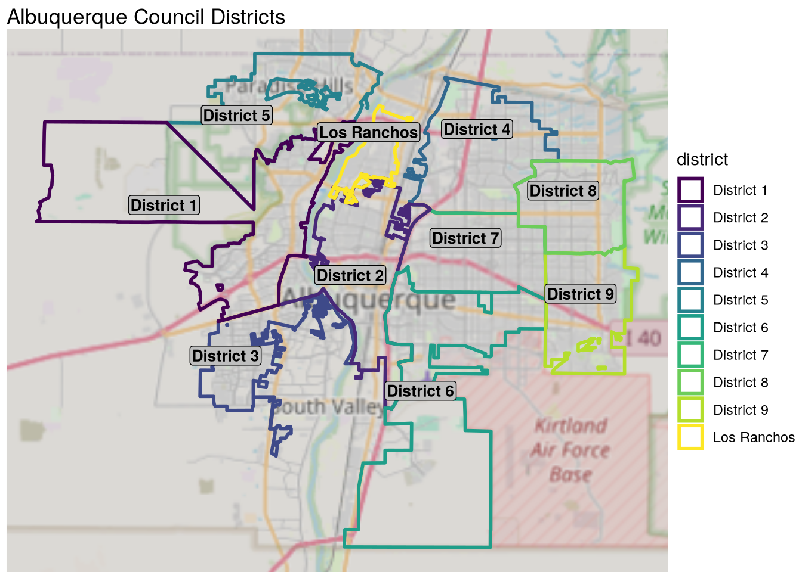
One thing to notice on this map is that there are numerous areas of unincorporated Bernalillo County which geographically seem to lie inside Albuquerque’s borders but do not actually belong to any city district. A closer look reveals some of these holes.
council_dists %>%
filter(district %in% c(
"District 2", "District 4",
"District 5", "Los Ranchos"
)) %>%
dist_plot()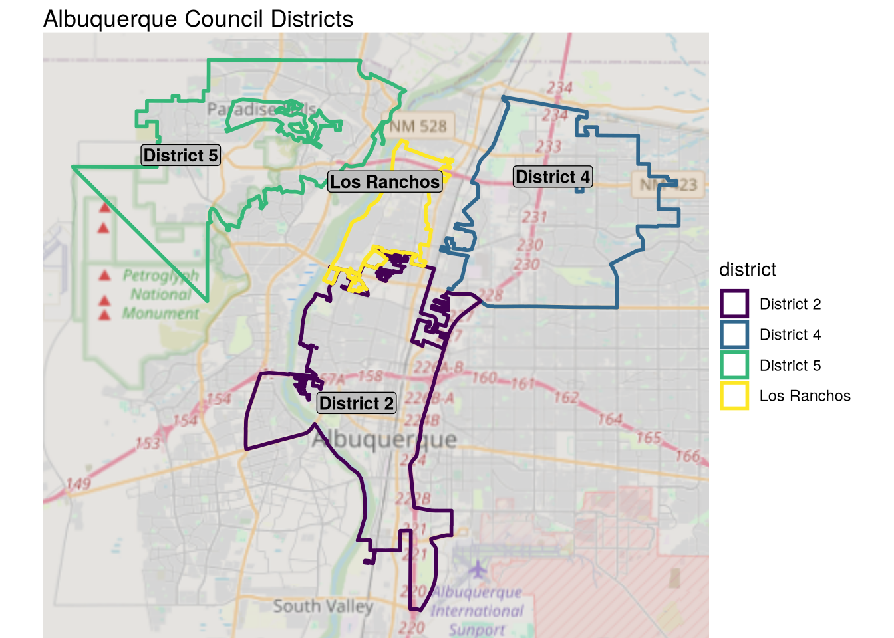
This will become relevant later as we map the census data into the districts, as some of the data will lie outside city boundaries, and be “lost”. I do think it makes sense to fill in the holes in the middles of districts, however. I’ll use the convenient st_remove_holes() function from the nngeo package to do so.
council_dists <- st_remove_holes(council_dists)I can check to see that the holes are gone.
Show the code
dist_plot(council_dists)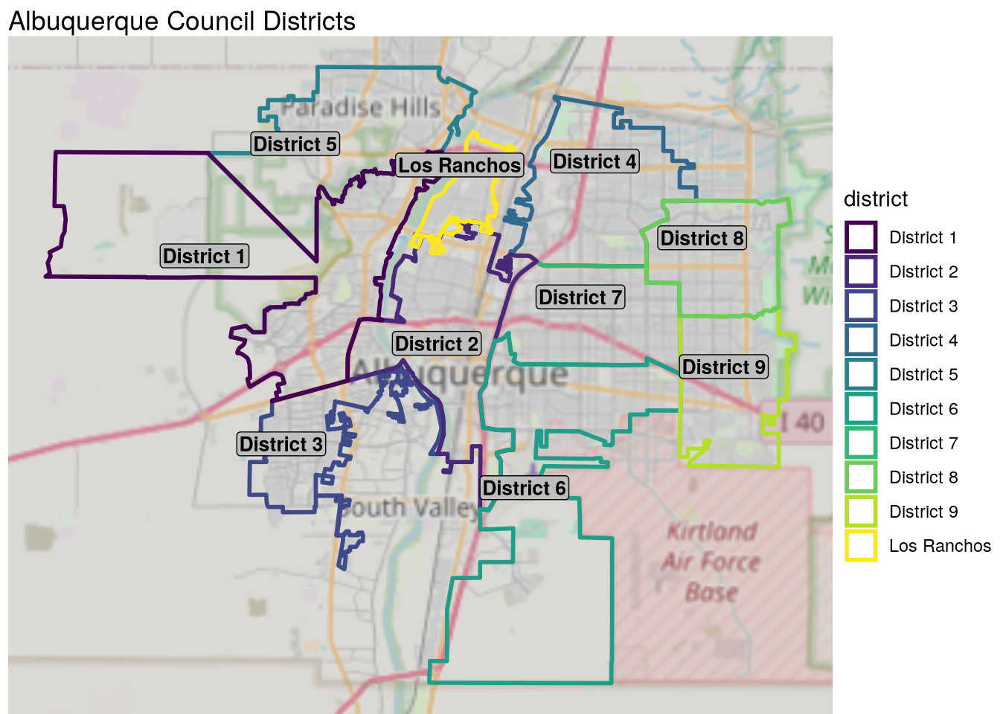
Show the code
council_dists %>%
filter(
district %in% c(
"District 2", "District 4",
"District 5", "Los Ranchos"
)
) %>%
dist_plot()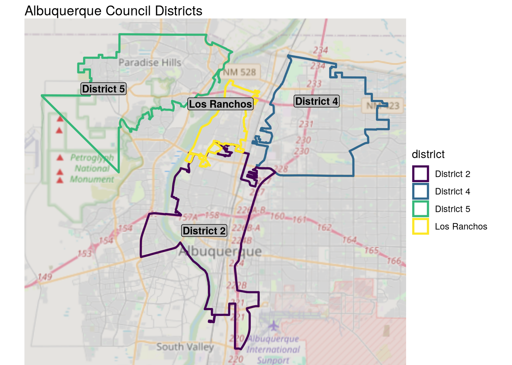
2.2 Working with census data
Now I will get the age, sex, race and educational demographic data. I will use tables from 2023’s five-year American Community Survey. These tables are not like the decennial census data which contains “actual” numbers, rather they are estimates together with margins of error based on surveys collected on an on-going basis. The data is available at different levels of granularity, and can optionally provide geometries for spatial analysis, manipulation and mapping. I need tract level data for my study area, which is the most detail provided, and I need the geometries in order to divide the data between the council districts and do mapping. I also want to compare to state-wide and country-wide data, so I’ll grab that data as well, but I don’t need the geometry in those cases, since I won’t be mapping or splitting that data.
tidycensus provides the get_acs function to download the survey data. It takes a series of pretty self-explanatory arguments. I’ll do this many times for different tables, so here is a function to do that. I’ll use the year constant which I set at the beginning to be 2023.
get_tables <-
function(geography, table, labels,
state = NULL, county = NULL,
geometry = F) {
if (geography != "us") state <- "NM"
if (geography == "tract") county <- "Bernalillo"
get_acs(
geography = geography,
state = state,
county = county,
table = table,
year = year,
geometry = geometry,
cache_table = T
) %>%
clean_names() %>%
select(-2) %>%
clean_names() %>%
left_join(labels)
}The geography will be either “us”, “state” or “tract”. Depending on the level, the state and/or county arguments will or won’t be needed, so these have been initialized with a default value of NULL. The geometry argument determines whether or not an sf object is returned instead of a tibble. Then I’ll drop an unneeded column, use janitor to clean the names, and join the labels, which have yet to be defined.
One problem with the census tables is that they contain variable “names”, which are actually non-descriptive alpha-numeric strings. For tables, plotting, and just exploring data, they are useless. On the other hand, manually changing the names would be unacceptably tedious and error prone. Instead, I’ll use tidycensus::load_variables. This downloads all the available variables together with descriptions and other information. Browsing the table with View is a good way to find which variables you need. The descriptions can also be used to replace the variable “name” with a descriptive label. The descriptions themselves need cleaning, though. This function cleans up the descriptions and inserts a _ where it will later be used to create discrete columns for sex and age group.
get_labels <- function(table) {
load_variables(year, "acs5") %>%
filter(str_detect(name, table)) %>%
select(1:2) %>%
mutate(
label = str_replace(label, "Estimate!!Total:!!", ""),
label = str_replace(label, "Estimate!!", ""),
label = str_replace(label, ":!!", "_"),
label = str_replace(label, ":$", "")
) %>%
rename(variable = name)
}Now, I will write the splitting function. For Bernalillo County, I want to be able to divide the data by district. To do so, I will first need to calculate the area for each tract. I can do this when I download the data. I will then use st_intersection, which will create new rows with separate geographies for those tracts which are divided among multiple districts. The values associated with each tract are not automatically split among the subsections however, so I must do that manually. Since they are all counts (extensive variables), I will calculate the areal proportion of each subsection, and use these percentages to divide the values among the subsections.
split_dists <- function(df, vars) {
st_intersection(df, council_dists) %>%
mutate(
area_split = st_area(.),
area_pct = area_split / area,
new_value = as.numeric(round(value * area_pct, 0))
)
}2.3 Tables, graphs and maps
I will use the gt package to create tables. For the tables, I need to pivot the data so I have columns for each region or district. I also often want to use percentages instead of raw numbers, so I’ll calculate those.
These functions requires some special syntax, however, since many tidyverse functions use bare column names rather than strings, eg. select(column) instead of select("column"). This is problematic when using these functions within other functions, because those column names must be passed as string arguments to the outer function. Therefore, the special syntax is required when writing such nested functions. For grouping, there is the handy group_by_at() function, which takes a string as a variable name. Within other functions from the tidyverse, we need to use .data[["variable"]] to refer to columns. Here, I need it in both pivot_wider and arrange.
prepare_tables <- function(df, group, variable) {
totals <- df %>%
group_by_at(group) %>%
summarise(total = sum(value))
df %>%
group_by_at(c(variable, group)) %>%
summarise(value = sum(value)) %>%
left_join(totals) %>%
mutate(percent = value / total) %>%
select(-c(total, value)) %>%
pivot_wider(
names_from = .data[[group]],
values_from = percent
) %>%
ungroup()
}
print_table <- function(df, group, title, subtitle = "", pct = T) {
df %>%
arrange(.data[[group]]) %>%
gt(rowname_col = group) %>%
{
if (pct) fmt_percent(., columns = everything(), decimals = 1)
else fmt_number(., columns = everything(), decimals = 0)
} %>%
tab_style(
style = cell_text(align = "center"),
locations = cells_column_labels(columns = everything())
) %>%
tab_header(
title = md(title),
subtitle = md(subtitle)
) %>%
tab_source_note(source_note = source) %>%
tab_style(
style = cell_text(align = "right"),
locations = cells_source_notes()
) %>%
gt_theme_espn() %>%
opt_align_table_header(align = "center") %>%
cols_align(align = "center", columns = everything()) %>%
data_color(
palette = "RColorBrewer::RdBu", direction = "row",
method = "bin"
)
}I’ll want to show some percentages on maps, too. This is similar to the prepare_tables function above.
calculate_dist_percents <- function(df1, df2) {
totals <- df1 %>%
group_by(district) %>%
summarise(total = sum(value))
df2 %>%
group_by(district) %>%
summarise(value = sum(value)) %>%
left_join(totals) %>%
mutate(
percent = value / total,
label = glue("{round(percent, 3) * 100}%")
)
}
map_demo <- function(sf, pct = T) {
dist_plot(council_dists) +
{
if (pct) geom_sf(data = sf, aes(fill = percent), alpha = 0.35)
else geom_sf(data = sf, aes(fill = value), alpha = 0.35)
} +
{
if (pct) scale_fill_viridis_c(labels = scales::label_percent())
else scale_fill_viridis_c(labels = scales::label_comma())
} +
geom_sf_label(
data = council_dists,
aes(label = district), fontface = "bold",
nudge_y = 1000, nudge_x = -500, fill = "gray",
label.padding = unit(0.1, "lines"), size = 3.5
) +
geom_sf_label(
data = sf,
aes(label = label),
fill = "grey", nudge_y = -1000
) +
guides(color = "none") +
labs(
title = ifelse(pct, "Percentage of the population", "Population"),
caption = source,
fill = NULL
)
}Finally, I will write a couple of functions for bar graphs. I’ll need to use the .data[[]] syntax in the aes() functions. The first combines men and women, while the second splits them out.
compare_plot <- function(df, fill, x_var, position = "fill") {
df %>%
ggplot(aes(
x = .data[[x_var]],
y = value,
fill = .data[[fill]]
)) +
geom_col(position = position) +
scale_fill_viridis_d() +
theme(axis.title = element_blank()) +
labs(caption = source)
}
mf_plot <- function(df, groups, pos) {
df %>%
group_by_at(groups) %>%
summarise(value = sum(value)) %>%
mutate(value = ifelse(sex == "Male", -value, value)) %>%
ggplot(aes(x = value, y = .data[[groups[pos]]], fill = sex)) +
geom_col() +
theme(
axis.ticks = element_blank(),
axis.text.x = element_blank(),
axis.title.y = element_blank()
)
}To be honest, I haven’t really prepared any data yet, I’ve only prepared to prepare the data. The actual data preparation will be shown at the beginning of each section, as every data set has its own peculiarities.
3 Exploring the data
3.1 Age and Sex
Now we can compare ages and sexes between Albuquerque, the state, and the nation.
Show the code
p1 <- age_sex_us %>%
mf_plot(c("sex", "agegroup"), pos = 2) +
theme(legend.position = "none") +
xlab("US")
p2 <- age_sex_nm %>%
mf_plot(c("sex", "agegroup"), pos = 2) +
theme(
legend.position = "none",
axis.text.y = element_blank()
) +
xlab("New Mexico")
p3 <- age_sex_dist %>%
group_by(sex, agegroup) %>%
summarise(value = sum(value)) %>%
mf_plot(c("sex", "agegroup"), pos = 2) +
theme(
axis.text.y = element_blank(),
legend.title = element_blank()
) +
xlab("Albuquerque")
pw <- p1 + p2 + p3
pw + plot_annotation(
title = "Age and Sex Comparison",
caption = source
)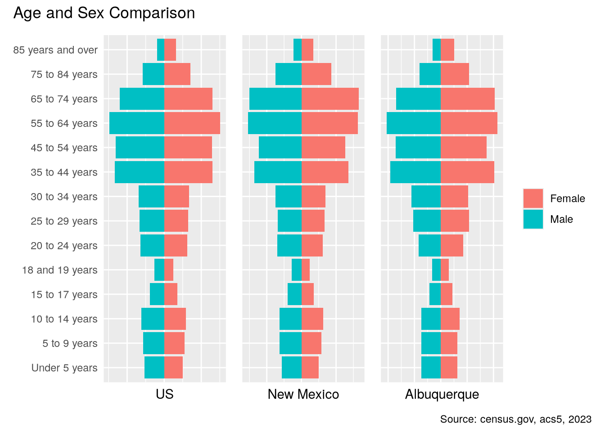
Overall, these profiles all seem pretty similar, although Albuquerque would seem to have proportionally fewer teens and more 30 year olds than the rest of the state or country. Lets compare the districts.
Show the code
age_sex_dist %>%
filter(district != "Los Ranchos") %>%
mf_plot(c("district", "sex", "agegroup"), pos = 3) +
facet_wrap(~district) +
labs(
x = "population",
caption = source
) +
theme(axis.text.y = element_text(size = 5))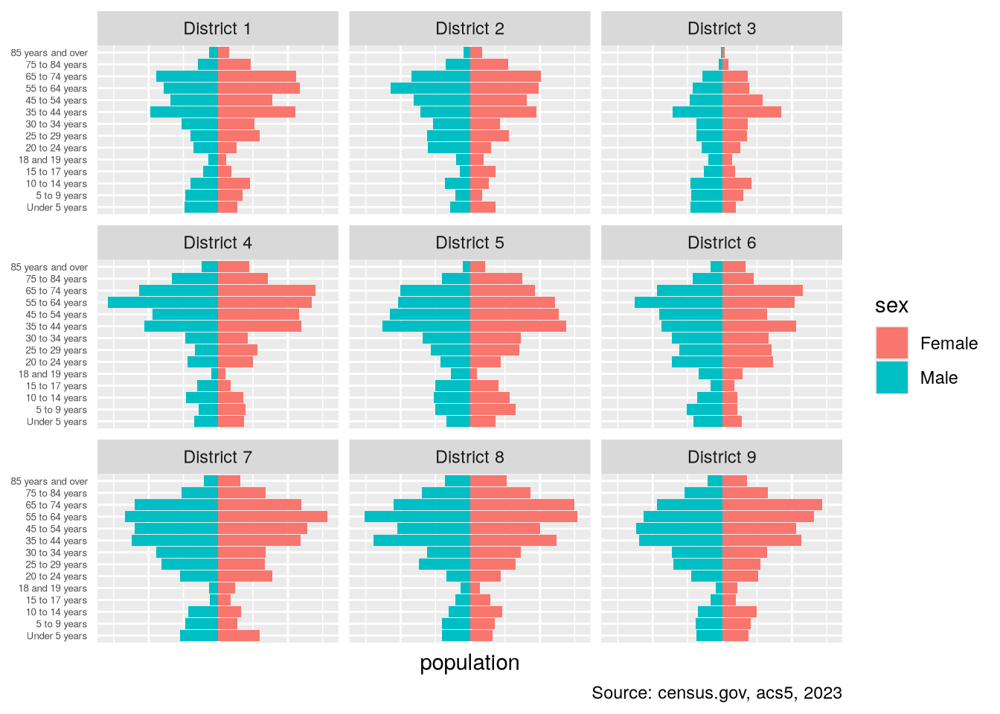
Across the city, on the other hand, there is considerable variability, both in age and sex. For example sexual imbalance among 18 and 19 year olds in District 5, where males strongly outnumber females, compared to District 7 where the opposite is true. District 3 in particular would seem to have a large proportion of children, while District 8 has many more 35 and up.
It’s time to look at the numbers.
Show the code
age_sex_cmp <- age_sex_dist %>%
group_by(sex, agegroup) %>%
summarise(value = sum(value))
c(age_sex_cmp, age_sex_nm, age_sex_us) %<-%
map2(
list(age_sex_cmp, age_sex_nm, age_sex_us),
c("Albuquerque", "New Mexico", "US"),
\(df, region) df %>% mutate(region = region)
)
age_sex_compare <- rbind(age_sex_cmp, age_sex_nm, age_sex_us)
age_sex_compare %>%
prepare_tables("region", "agegroup") %>%
mutate(agegroup = factor(agegroup, unique(agegroup))) %>%
print_table(
group = "agegroup",
title = "**Comparison of Agegroups**"
) %>%
cols_width(
agegroup ~ px(155),
everything() ~ px(110)
)| Comparison of Agegroups | |||
|---|---|---|---|
| Albuquerque | New Mexico | US | |
| Under 5 years | 4.6% | 4.7% | 4.9% |
| 5 to 9 years | 4.6% | 5.3% | 5.3% |
| 10 to 14 years | 4.9% | 5.6% | 5.7% |
| 15 to 17 years | 2.9% | 3.3% | 3.5% |
| 18 and 19 years | 2.1% | 2.3% | 2.4% |
| 20 to 24 years | 5.7% | 5.8% | 6.0% |
| 25 to 29 years | 7.1% | 6.0% | 6.3% |
| 30 to 34 years | 7.3% | 6.3% | 6.5% |
| 35 to 44 years | 13.3% | 12.0% | 12.5% |
| 45 to 54 years | 11.6% | 11.0% | 12.3% |
| 55 to 64 years | 14.2% | 14.0% | 14.2% |
| 65 to 74 years | 12.6% | 14.0% | 11.9% |
| 75 to 84 years | 6.3% | 7.1% | 6.1% |
| 85 years and over | 2.8% | 2.5% | 2.4% |
| Source: census.gov, acs5, 2023 | |||
In each row, the darkest red are the lowest values, and the darkest blue are the highest values. This confirms what I noticed visually, that Albuquerque seems to have less people under 25, while having more 25-44 year olds than either the nation or the state as a whole. Let’s compare by district.
Show the code
age_sex_dist %>%
filter(district != "Los Ranchos") %>%
mutate(district = str_replace(district, "District", "Dist")) %>%
prepare_tables("district", "agegroup") %>%
mutate(agegroup = factor(agegroup, unique(agegroup))) %>%
print_table(
group = "agegroup",
title = "**Comparison of Agegroups**",
subtitle = "Percent by District"
)| Comparison of Agegroups | |||||||||
|---|---|---|---|---|---|---|---|---|---|
| Percent by District | |||||||||
| Dist 1 | Dist 2 | Dist 3 | Dist 4 | Dist 5 | Dist 6 | Dist 7 | Dist 8 | Dist 9 | |
| Under 5 years | 5.3% | 4.7% | 6.9% | 4.1% | 3.8% | 4.2% | 5.8% | 3.7% | 4.2% |
| 5 to 9 years | 5.7% | 2.8% | 8.0% | 3.8% | 6.3% | 4.4% | 3.8% | 4.0% | 4.4% |
| 10 to 14 years | 6.0% | 4.5% | 9.3% | 4.7% | 5.8% | 3.5% | 3.9% | 4.0% | 4.7% |
| 15 to 17 years | 2.9% | 3.6% | 4.8% | 2.7% | 4.9% | 2.1% | 1.5% | 2.6% | 2.1% |
| 18 and 19 years | 1.7% | 2.8% | 3.7% | 1.2% | 2.0% | 3.9% | 1.9% | 1.4% | 1.7% |
| 20 to 24 years | 4.3% | 6.5% | 6.0% | 5.4% | 4.7% | 8.9% | 6.7% | 4.0% | 5.4% |
| 25 to 29 years | 6.9% | 8.4% | 7.8% | 5.1% | 6.8% | 8.1% | 7.5% | 7.2% | 7.0% |
| 30 to 34 years | 7.3% | 6.9% | 7.8% | 5.1% | 7.6% | 8.4% | 8.0% | 7.0% | 7.6% |
| 35 to 44 years | 14.5% | 11.8% | 16.7% | 12.9% | 14.3% | 11.8% | 12.3% | 13.6% | 13.0% |
| 45 to 54 years | 10.3% | 11.5% | 11.2% | 12.0% | 13.1% | 9.5% | 12.6% | 10.6% | 12.9% |
| 55 to 64 years | 13.7% | 15.1% | 8.7% | 16.7% | 12.2% | 14.0% | 14.8% | 15.8% | 13.7% |
| 65 to 74 years | 14.0% | 13.2% | 7.0% | 14.5% | 10.4% | 12.8% | 12.2% | 13.4% | 13.3% |
| 75 to 84 years | 5.3% | 6.3% | 1.5% | 7.9% | 6.3% | 5.4% | 6.2% | 8.1% | 6.7% |
| 85 years and over | 2.1% | 1.9% | 0.6% | 3.9% | 1.8% | 3.0% | 2.7% | 4.6% | 3.2% |
| Source: census.gov, acs5, 2023 | |||||||||
There is, indeed, a lot of variability across districts. For example, only 2.8% of those in District 2 are 5-9 years old, while the number is 8.0% in District 3. On the other hand, a mere 17.8% in District 3 are 55 years or older, while District 8 has 41.9%. In fact, District 3 has the highest percentage in all groups below 20 years of age, while District 6 claims the spot for 18-34 year olds. I’m curious to see the actual population numbers.
Show the code
age_sex_dist %>%
st_drop_geometry() %>%
filter(district != "Los Ranchos") %>%
mutate(district = str_replace(district, "District", "Dist")) %>%
group_by(district, agegroup) %>%
summarise(value = sum(value)) %>%
pivot_wider(
names_from = district,
values_from = value
) %>%
print_table(
group = "agegroup",
title = "**Comparison of Agegroups**",
subtitle = "Population totals",
pct = F
)| Comparison of Agegroups | |||||||||
|---|---|---|---|---|---|---|---|---|---|
| Population totals | |||||||||
| Dist 1 | Dist 2 | Dist 3 | Dist 4 | Dist 5 | Dist 6 | Dist 7 | Dist 8 | Dist 9 | |
| Under 5 years | 1,507 | 1,311 | 1,296 | 1,437 | 1,409 | 1,392 | 2,286 | 1,450 | 1,505 |
| 5 to 9 years | 1,642 | 780 | 1,488 | 1,350 | 2,313 | 1,441 | 1,509 | 1,530 | 1,583 |
| 10 to 14 years | 1,714 | 1,279 | 1,744 | 1,665 | 2,163 | 1,155 | 1,524 | 1,534 | 1,687 |
| 15 to 17 years | 817 | 1,022 | 898 | 953 | 1,817 | 703 | 598 | 1,020 | 735 |
| 18 and 19 years | 498 | 781 | 690 | 415 | 744 | 1,268 | 748 | 558 | 613 |
| 20 to 24 years | 1,242 | 1,822 | 1,121 | 1,878 | 1,726 | 2,915 | 2,644 | 1,561 | 1,921 |
| 25 to 29 years | 1,980 | 2,364 | 1,453 | 1,806 | 2,530 | 2,655 | 2,954 | 2,780 | 2,492 |
| 30 to 34 years | 2,094 | 1,929 | 1,465 | 1,802 | 2,803 | 2,771 | 3,153 | 2,697 | 2,726 |
| 35 to 44 years | 4,158 | 3,325 | 3,118 | 4,511 | 5,274 | 3,880 | 4,838 | 5,265 | 4,648 |
| 45 to 54 years | 2,936 | 3,247 | 2,096 | 4,214 | 4,840 | 3,102 | 4,973 | 4,110 | 4,585 |
| 55 to 64 years | 3,908 | 4,258 | 1,625 | 5,849 | 4,522 | 4,593 | 5,820 | 6,106 | 4,885 |
| 65 to 74 years | 4,007 | 3,715 | 1,302 | 5,077 | 3,864 | 4,192 | 4,786 | 5,173 | 4,749 |
| 75 to 84 years | 1,514 | 1,784 | 279 | 2,756 | 2,316 | 1,766 | 2,429 | 3,132 | 2,383 |
| 85 years and over | 596 | 522 | 116 | 1,363 | 658 | 992 | 1,052 | 1,782 | 1,145 |
| Source: census.gov, acs5, 2023 | |||||||||
Here we see that, while District 3 has a much higher proportion of people under 20, there are more children in District 5. Also, while District 5 had a higher percentage of 18-35 year olds, more people in this group live in District 7.
This high level of variability deserves further study, and could possibly prove useful when looking at economic differences between the districts later.
Let’s take a look at the districts on a map. I’ll plot the percentage of the population under 20 years old, as well as the actual population.
Show the code
dist_lt_20 <-
calculate_dist_percents(
age_sex_dist,
age_sex_dist_sf %>%
filter(agegroup %in% agegroup[1:5])
)
dist_lt_20 %>%
map_demo() +
labs(subtitle = "Under 20 years old")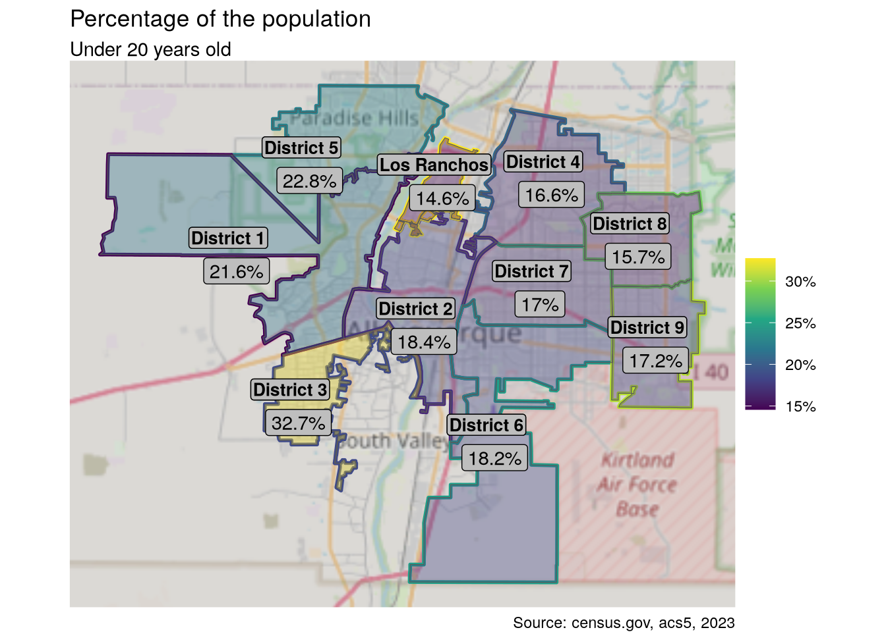
Show the code
age_sex_dist_sf %>%
filter(
district != "Los Ranchos",
agegroup %in% agegroup[1:5]
) %>%
group_by(district) %>%
summarise(value = sum(value)) %>%
mutate(label = scales::comma(value)) %>%
map_demo(pct = F) +
labs(subtitle = "Under 20 years old")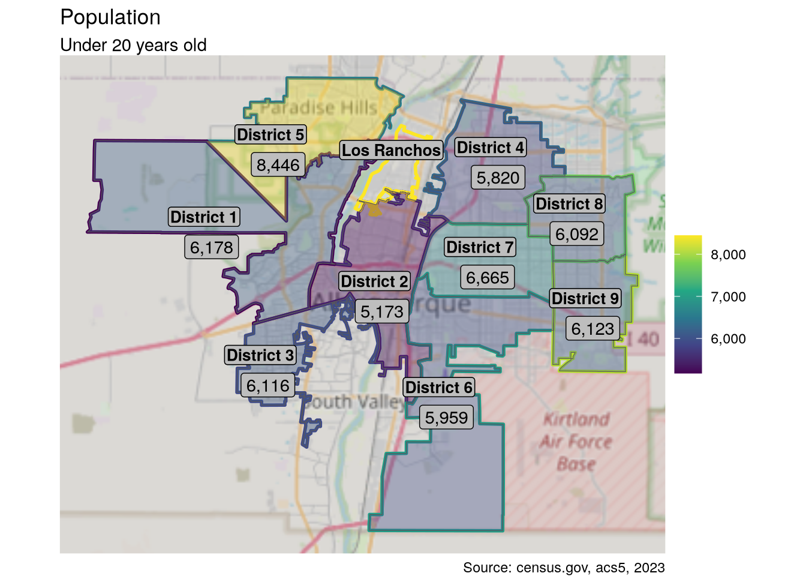
3.2 Race
Race is a little complicated. The official racial categories include White, Black, Asian American, and Native American. Hispanic vs Non-Hispanic is a separate categorization in the census data. I am interested in both.
Show the code
race_compare_plt <-
race_compare_plt %>%
mutate(
region = factor(region, level = c("US", "New Mexico", "Albuquerque"))
)
race_dist_plt <- race_dist_plt %>%
filter(district != "Los Ranchos") %>%
mutate(district = str_replace(district, "District", "Dist"))
race_compare_plt %>%
compare_plot("race", "region") +
scale_y_continuous(labels = scales::percent) +
labs(
title = "Racial Comparison",
subtitle = "Albuquerque, State and Country",
fill = "Selected Races"
)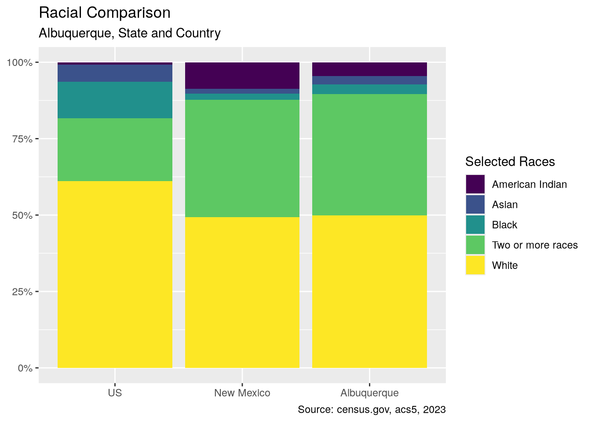
Here we see that New Mexico has few Black and Asian residents, but unsurprisingly a much larger percentage of Native Americans when compared to the country as a whole. These differences are somewhat less in Albuquerque itself. Both have a large percentage of people saying 2 or more races. This could be because, in New Mexico, many Hispanics self-identify as Spanish or Mexican as well as White, therefore selecting 2 or more races. It will be interesting to see if districts with high Hispanic populations also have high “2 or more race” populations.
Show the code
race_compare_plt %>%
compare_plot("hisp", "region") +
scale_y_continuous(labels = scales::percent) +
labs(
title = "Hispanic Comparison",
subtitle = "Albuquerque, State and Country",
fill = ""
)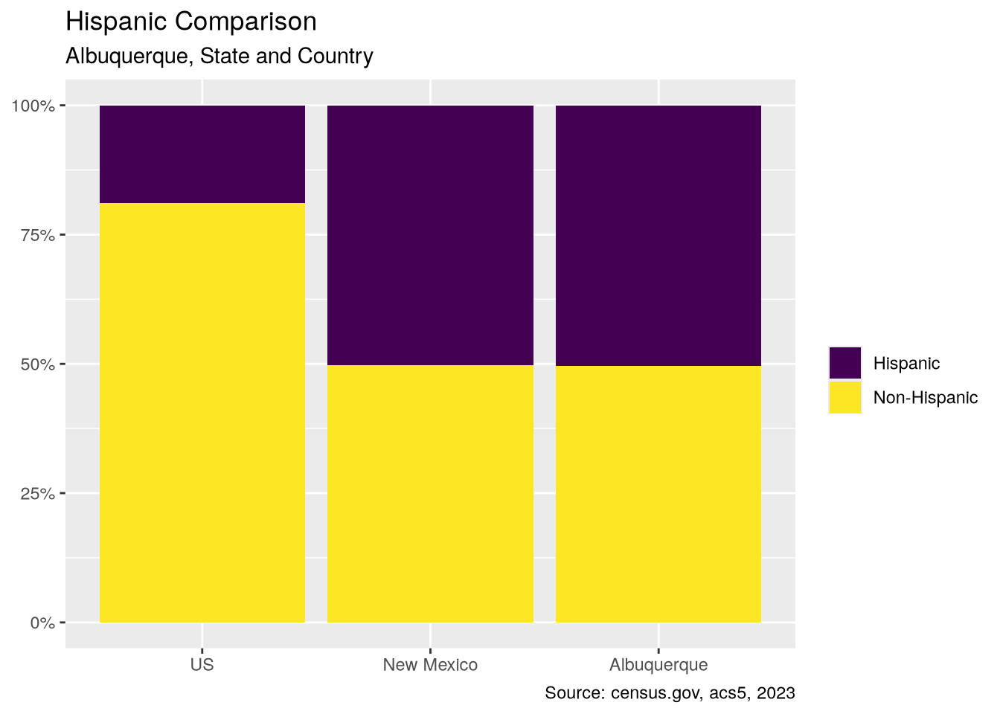
New Mexico has the largest Hispanic population by percentage of any state in the country, so these results are hardly surprising. The district breakdown will be more interesting.
Show the code
p1 <- race_dist_plt %>%
compare_plot("race", "district") +
scale_y_continuous(labels = scales::percent) +
theme(
axis.text.x = element_text(angle = 45, vjust = 1, hjust = 1),
legend.position = "none"
) +
labs(
title = "Racial Comparison by District",
subtitle = "Percentage",
caption = ""
)
p2 <- race_dist_plt %>%
compare_plot("race", "district", position = "stack") +
scale_y_continuous(labels = scales::comma) +
theme(axis.text.x = element_text(angle = 45, vjust = 1, hjust = 1)) +
labs(
subtitle = "Population",
fill = "Selected Races"
)
p1 + p2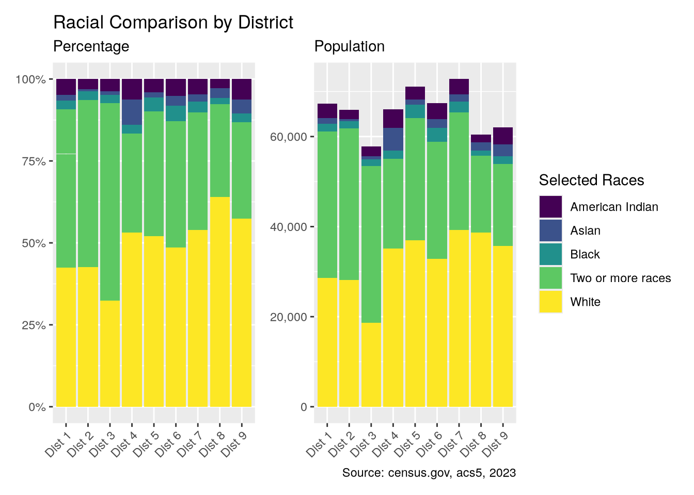
District 4 shows the greatest racial diversity, while district 2 shows the least. District 3 shows the largest percentage of people claiming two or more races. Let’s compare Hispanic to non-Hispanic.
Show the code
p1 <- race_dist_plt %>%
compare_plot("hisp", "district") +
scale_y_continuous(labels = scales::percent) +
theme(
axis.text.x = element_text(angle = 45, vjust = 1, hjust = 1),
legend.position = "none"
) +
labs(
title = "Hispanic Comparison by District",
subtitle = "Percentage", caption = ""
)
p2 <- race_dist_plt %>%
compare_plot("hisp", "district", "stack") +
scale_y_continuous(labels = scales::comma) +
theme(
axis.text.x = element_text(angle = 45, vjust = 1, hjust = 1),
legend.title = element_blank()
) +
labs(subtitle = "Population")
p1 + p2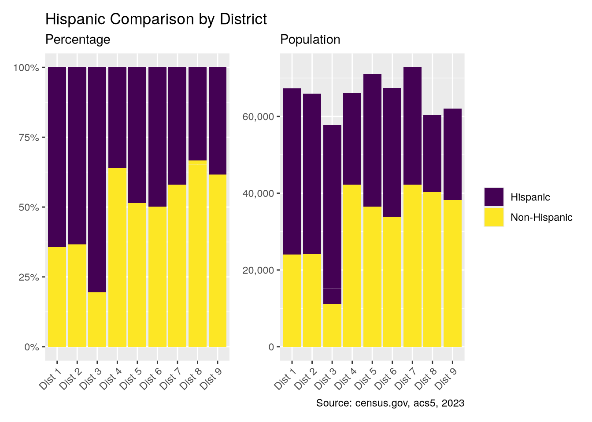
Indeed, there is a high degree of variability across Albuquerque, with some districts very heavily Hispanic, such as the third district, and some not, such as the eighth. The high level of Hispanics in district 3, combined with the fact that this district also has the highest proportion of those who identify as two more more races, lends support to my hypothesis that this group are Hispanic Whites. Let’s view this on a map.
Show the code
dist_hisp <-
calculate_dist_percents(
race_dist,
race_dist_sf %>%
filter(hisp == "Hispanic")
)
dist_hisp %>%
map_demo() +
labs(subtitle = "Hispanic")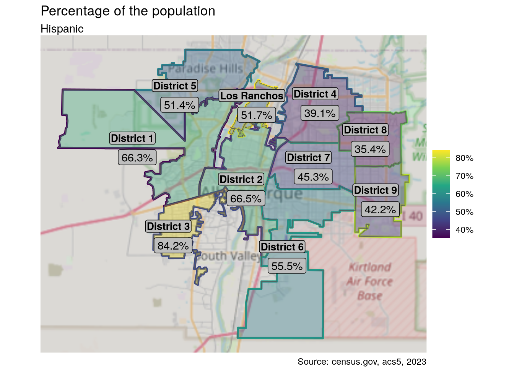
3.3 Education
Finally, I can turn to education. This data represents the educational attainment level of people 25 or older. As before, I’ll start with a comparison with national and state data.
Show the code
p1 <- edu_us %>%
mf_plot(c("sex", "education"), 2) +
theme(legend.position = "none") +
xlab("US")
p2 <- edu_nm %>%
mf_plot(c("sex", "education"), 2) +
theme(
legend.position = "none",
axis.text.y = element_blank()
) +
xlab("New Mexico")
p3 <- edu_dist %>%
group_by(sex, education) %>%
summarise(value = sum(value)) %>%
mf_plot(c("sex", "education"), pos = 2) +
theme(
axis.text.y = element_blank(),
legend.title = element_blank()
) +
xlab("Albuquerque")
pw <- p1 + p2 + p3
pw + plot_annotation(
title = "Educational Attainment",
subtitle = "Age 25 or older",
caption = "Source: census.gov, acs5, 2023"
)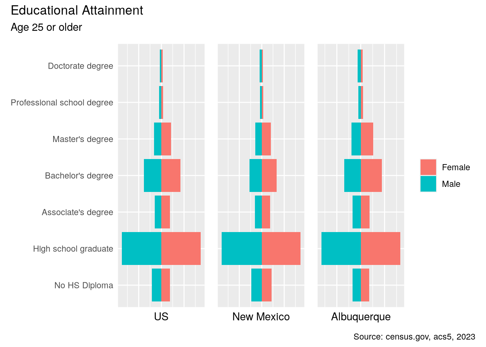
Albuquerque would seem to have proportionally a higher number of people with college degrees compared to New Mexico, and a higher number of advanced degrees than the rest of the country.
Show the code
edu_dist_cmp <- edu_dist %>%
group_by(sex, education) %>%
summarise(value = sum(value)) %>%
mutate(region = "Albuquerque")
edu_compare <- rbind(edu_dist_cmp, edu_nm, edu_us)
edu_compare_table <- edu_compare %>%
prepare_tables("region", "education") %>%
mutate(education = factor(education, edu_levels))
edu_compare_table %>%
print_table(
group = "education",
title = "**Comparison of Educational Attainment**",
subtitle = "Age 25 or older"
) %>%
cols_width(
education ~ px(190),
everything() ~ px(110)
)| Comparison of Educational Attainment | |||
|---|---|---|---|
| Age 25 or older | |||
| Albuquerque | New Mexico | US | |
| No HS Diploma | 9.2% | 12.3% | 10.6% |
| High school graduate | 43.4% | 48.3% | 45.6% |
| Associate's degree | 9.3% | 9.2% | 8.8% |
| Bachelor's degree | 20.7% | 16.6% | 21.3% |
| Master's degree | 11.9% | 9.6% | 9.8% |
| Professional school degree | 2.7% | 2.0% | 2.3% |
| Doctorate degree | 2.8% | 2.1% | 1.6% |
| Source: census.gov, acs5, 2023 | |||
Indeed, Albuquerque does have proportionally more advanced degrees than the nation as a whole.
Show the code
edu_dist %>%
filter(district != "Los Ranchos") %>%
mf_plot(c("district", "sex", "education"), 3) +
facet_wrap(~district) +
labs(
x = "Population",
title = "Educational attainment in Albuquerque",
subtitle = "Age 25 or older"
) +
theme(axis.text.y = element_text(size = 6))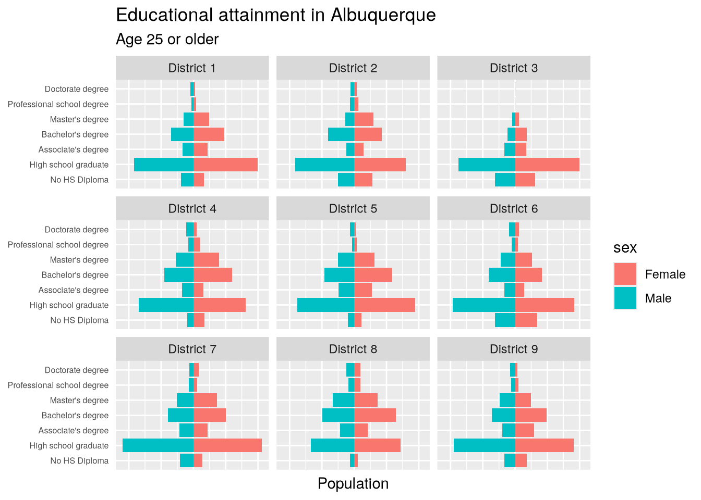
Again, we see significant variation between districts, District 3 notably devoid of nearly any professional or doctoral degrees. On the other hand, almost all of District 8 has at least completed high school.
Show the code
edu_dist_plt <- edu_dist %>%
filter(district != "Los Ranchos") %>%
mutate(
education = fct_rev(education),
district = str_replace(district, "District", "Dist")
)
p1 <- edu_dist_plt %>%
compare_plot("education", "district") +
scale_y_continuous(labels = scales::percent) +
theme(
axis.text.x = element_text(angle = 45, vjust = 1, hjust = 1),
legend.position = "none"
) +
labs(
title = "Educational Attainment by District (25 or older)",
subtitle = "Percentage",
caption = ""
)
p2 <- edu_dist_plt %>%
compare_plot("education", "district", position = "stack") +
scale_y_continuous(labels = scales::comma) +
theme(
axis.text.x = element_text(angle = 45, vjust = 1, hjust = 1)
) +
labs(
subtitle = "Population",
fill = "",
caption = source
)
p1 + p2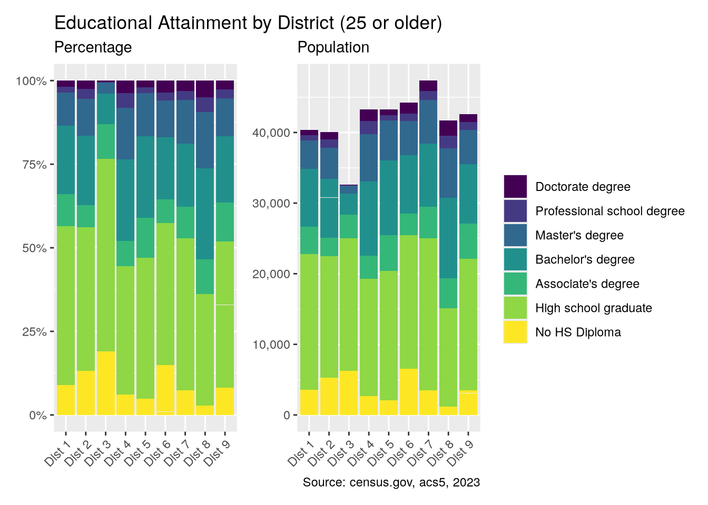
Show the code
edu_dist_table <- edu_dist %>%
filter(district != "Los Ranchos") %>%
prepare_tables("district", "education") %>%
rename_with(~ gsub("District", "Dist", .x))
edu_dist_table %>%
print_table(
group = "education",
title = "**Comparison of Educational Attainment**",
subtitle = "Age 25 or older"
)| Comparison of Educational Attainment | |||||||||
|---|---|---|---|---|---|---|---|---|---|
| Age 25 or older | |||||||||
| Dist 1 | Dist 2 | Dist 3 | Dist 4 | Dist 5 | Dist 6 | Dist 7 | Dist 8 | Dist 9 | |
| No HS Diploma | 8.9% | 13.2% | 19.1% | 6.2% | 4.8% | 14.9% | 7.3% | 2.9% | 8.2% |
| High school graduate | 47.5% | 42.8% | 57.6% | 38.3% | 42.3% | 42.6% | 45.6% | 33.4% | 43.7% |
| Associate's degree | 9.6% | 6.6% | 10.3% | 7.6% | 11.8% | 6.9% | 9.3% | 10.3% | 11.7% |
| Bachelor's degree | 20.5% | 20.9% | 9.1% | 24.3% | 24.4% | 18.7% | 18.9% | 27.3% | 19.8% |
| Master's degree | 9.9% | 10.9% | 3.3% | 15.5% | 13.0% | 11.0% | 13.1% | 16.8% | 11.3% |
| Professional school degree | 1.9% | 3.1% | 0.2% | 4.3% | 1.8% | 2.4% | 2.8% | 4.4% | 2.6% |
| Doctorate degree | 1.8% | 2.5% | 0.4% | 3.8% | 1.9% | 3.6% | 3.1% | 5.1% | 2.7% |
| Source: census.gov, acs5, 2023 | |||||||||
I would like to see where those without High School Diplomas live.
Show the code
edu_lt_hs <-
calculate_dist_percents(
edu_dist,
edu_dist_sf %>%
filter(education == edu_levels[1])
)
edu_lt_hs %>%
map_demo() +
labs(subtitle = "No High School Diploma")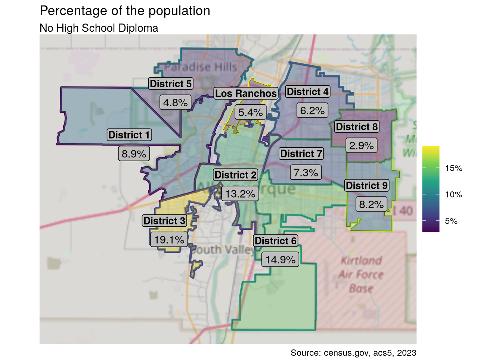
Show the code
edu_dist_sf %>%
filter(district != "Los Ranchos",
education == edu_levels[1]) %>%
group_by(district) %>%
summarise(value = sum(value)) %>%
mutate(label = scales::comma(value)) %>%
map_demo(pct = F) +
labs(subtitle = "No High School Diploma")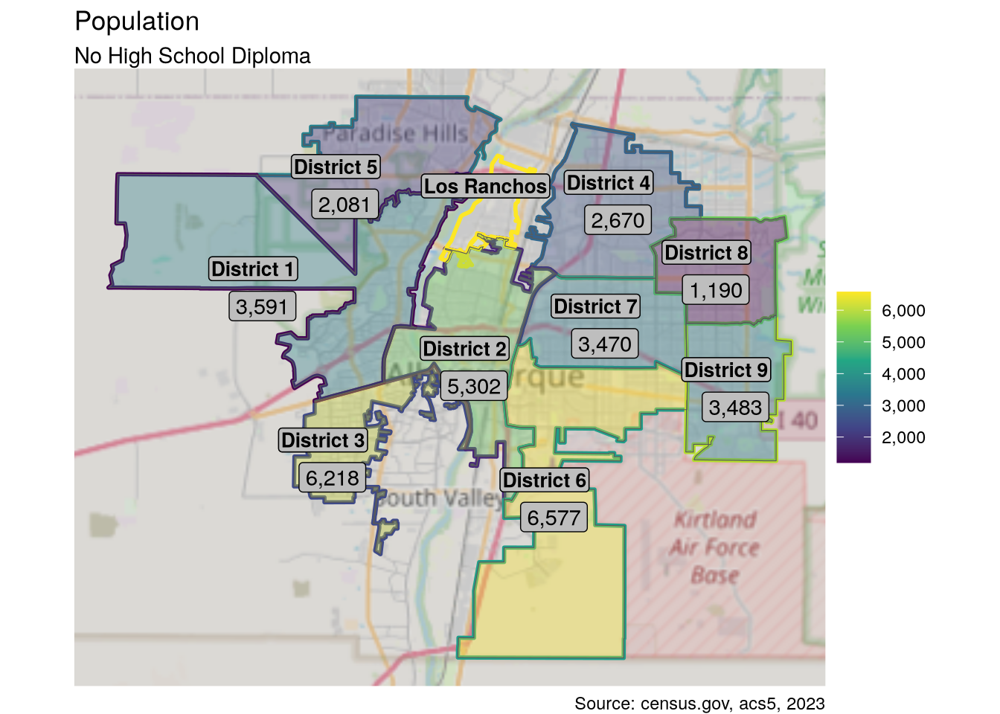
Both by percentage and by total, the southern districts of Albuquerque have many more people without diplomas than the rest. It seems that the further north you go, the more people with at least a diploma.
Let’s see where the people with advanced degrees live.
Show the code
edu_adv_deg <-
calculate_dist_percents(edu_dist, edu_dist_sf %>%
filter(education %in% edu_levels[5:7]))
edu_adv_deg %>%
map_demo() +
labs(subtitle = "Advanced Degrees")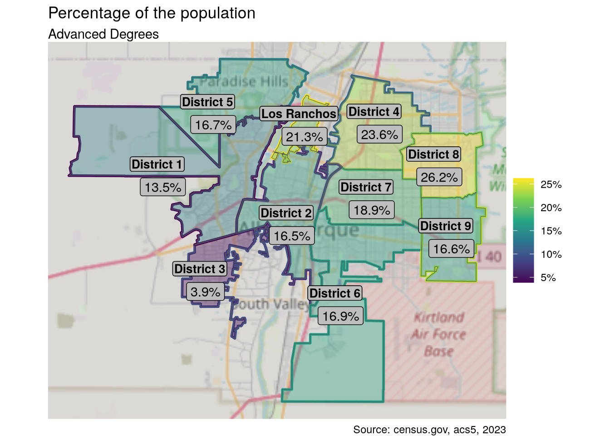
Show the code
edu_dist_sf %>%
filter(district != "Los Ranchos",
education %in% edu_levels[5:7]) %>%
group_by(district) %>%
summarise(value = sum(value)) %>%
mutate(label = scales::comma(value)) %>%
map_demo(pct = F) +
labs(subtitle = "Advanced Degrees")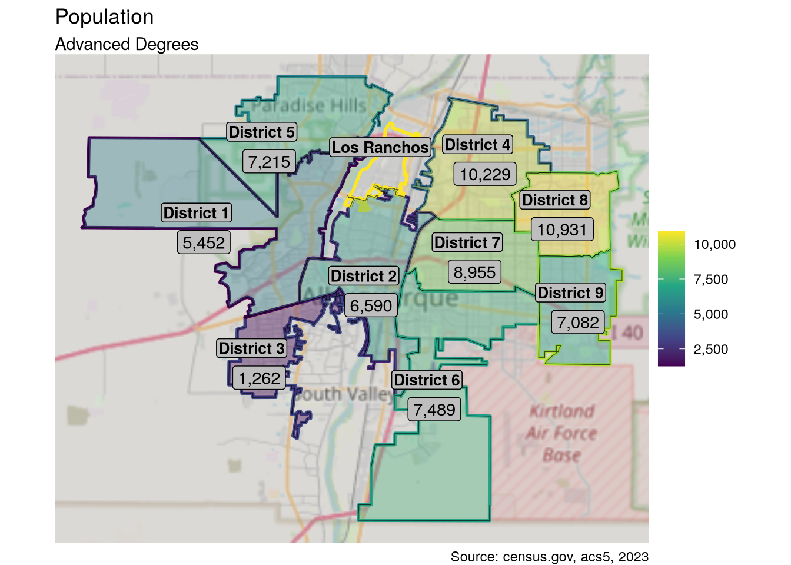
As we’ve seen before, there is extreme variability here. The differences between District 3 and District 8 are particularly stark, and in this case at least, represent the extremes of variability.
4 Conclusion
All cities have neighborhoods which are very different from one another demographically and economically. Whether the amount of variability we saw is “normal” is one question. The next step for me is to look at the economic indicators such as income, property values, rent and inequality, and see what correlation may exist between these variables and the demographic information gathered here.
I have many data sets that I want to save into two files for future use. For the US and New Mexico data, I can use R’s native format, but for the county and district information, which are sf objects, I will use multiple layers in a gpkg format file. To make this easy, I can use walk and walk2. These functions work just like the map functions, except that they don’t return anything useful. They are used only for “side effects” (a term from functional programming) such as reading, writing, or printing. Here, I’ll nest a map function within walk2.
walk(
list(
age_sex_us, edu_us, race_us,
age_sex_nm, edu_nm, race_nm
),
\(df) save(df, file = "data/us_nm_demographics.rda")
)
data_sets <- c(
"age_sex_bern", "edu_bern", "race_bern",
"age_sex_dist", "edu_dist", "race_dist", "council_dists"
)
walk2(
map(data_sets, \(x) get(x)),
data_sets,
\(df, level) st_write(df, "data/abq_demographics.gpkg",
layer = level, append = F
)
)